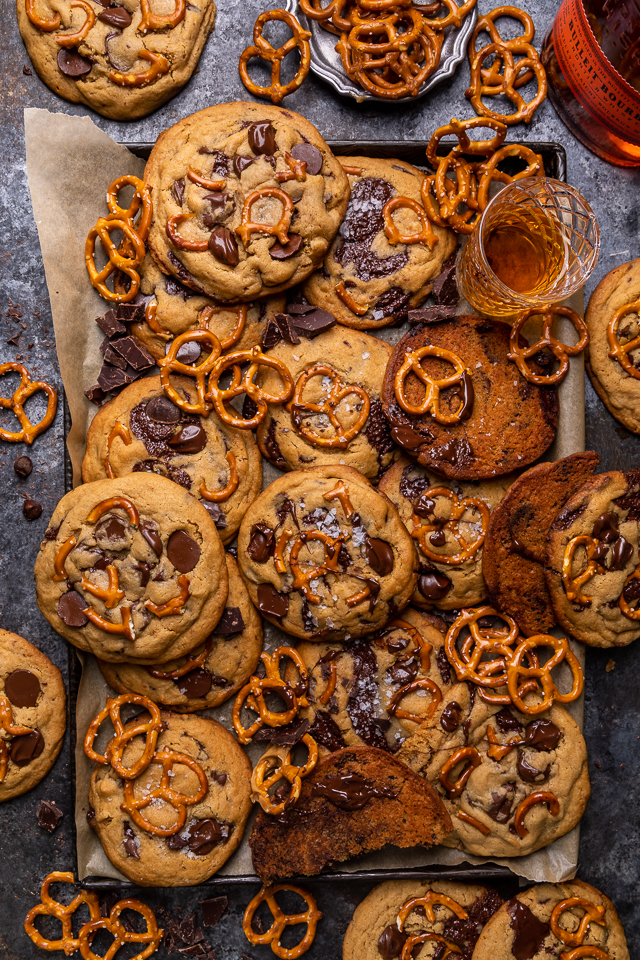

Salted Pretzel Peanut Butter Bourbon Chocolate Chip Cookies
These salted pretzel peanut butter bourbon chocolate chip cookies are crunchy, chewy, and so flavorful!
The bourbon adds just a kick of flavor, without being too dominant. A fun option for Father’s Day or cookie swaps!

Ingredients
- 2 ½ or 3 cups flour
- 2 teaspoons baking powder
- ¾ teaspoons baking soda
- ¼ teaspoons salt
- ⅛ teaspoon ground cinnamon
- 1 cup creamy peanut butter
- 1 cup unsalted butter, room temp.
- 1 cup granulated sugar
- ¾ cup light brown sugar
- 2 large eggs & 1 egg yolk, room temp.
- 3 teaspoons vanilla extract
- 3 & ½ tablespoons bourbon or whiskey
- 1 & ½ cup semi-sweet chocolate chips, extra for decorating
- 1 cup semi-sweet chocolate, roughly chopped into chunks
- 1 cup mini pretzels, roughly chopped
- Flaky sea salt, for sprinkling
Directions
- Preheat the oven to 350 degrees (F). Line two large baking sheets with parchment paper and set aside.
- In a large bowl whisk together the flour, baking powder, baking soda, cinnamon, and salt.
- In the bowl of a stand mixer fitted with the paddle attachment, beat peanut butter and butter until smooth.
- Gradually add in both sugars, one at a time, and beat until well combined, about 2 minutes.
- On low speed, add in the eggs and egg yolk, one at a time, beating well after each addition, and scraping the sides and bottom of the bowl as needed. Beat in the vanilla and bourbon.
- Gradually add in the dry ingredients, beating on low speed until just combined. Turn the mixer off.
- Using a rubber spatula, fold in the chocolate chips and chocolate chunks.
- Using a large cookie scoop, scoop out ¼ cup portions of the cookie dough and roll it into balls. Place the balls on the prepared baking sheets, leaving at least 2-inches between each cookie for spreading.
- Gently press pretzel pieces down on top of each cookie ball, slightly flattening the ball. This will help them spread evenly in the oven.
- Bake, one tray at a time, for 14 to 16 minutes, or until golden brown and set. Repeat with all cookie dough.
- When the cookies come out of the oven, press a few extra chocolate chips and/ or chocolate chunks on top while they’re still warm, and sprinkle with sea salt, if desired.
Notes
- If you're not using a digital scale to weigh your ingredients, you may want to reduce the
flour to 2 and 1/2 cups. Fluff up your flour first, then gently spoon it into the measuring cup
and level it off with a knife. But for best results, weigh your ingredients.
- Do not use natural peanut butter for this recipe. I recommend a regular creamy peanut butter like JIF or Skippy.
- I have not tested this recipe with crunchy peanut butter and do not know how it will work.